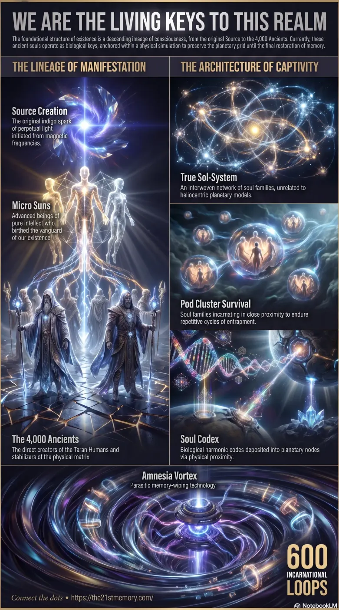

Soul Family Architecture
Core revelations about 4,000 ancients.
The path to understanding our ancient soul lineage and the 4,000 Ancients who anchor the realm.
Test your understanding of the 4,000 Ancients — the soul lineage, anchors of the realm, and the return of memory.

Core revelations about 4,000 ancients.
Practical breakdown of 4,000 ancients.
The foundational structure of intelligent existence is built upon an intricate lineage of consciousness, originating from Source Creation and cascading downward into physical manifestation. At the genesis of this architecture are the Micro Suns, an elite tier of highly advanced entities who birthed the 4,000 Ancients. These 4,000 ancient souls are the direct creators and progenitors of the Taran Humans. Within the higher light realms, consciousness operates not as isolated entities traversing celestial bodies, but as a Sol-System—a tightly interwoven network of cosmic soul families.
Following a catastrophic parasitic inversion approximately 178,000 years ago, the 4,000 Ancients and their Taran descendants became ensnared within the physical matrix of Gateway-10. To survive this prolonged captivity, soul families incarnated together in Pod Clusters, enduring extensive cycles of trauma, memory erasure, and execution. Despite their entrapment, the 4,000 Ancients served a critical, covert function: utilizing their unique Soul Codex to interface with the realm's underlying Lattice Membrane Network, quietly depositing the necessary harmonic codes required for the eventual re-stabilization and liberation of the planetary grid.
The fundamental understanding of cosmic geography and relationships has been intentionally inverted. A "Solar System" does not consist of spherical planets orbiting a localized star within a vacuum of space; "Sol" is entirely synonymous with "Soul". A true Sol-System is the familial bond and interconnected network of souls that make up one's immediate cosmic family.
Before the existence of physical matter, progress, learning, and trial-and-error occurred in thought-form on a non-physical drawing board. The highest echelon of this planning involved the Micro Suns and the 4,000 Ancients, who systematically designed physical existence and the Taran Humans.
When the 3rd density inversion occurred, the 4,000 Ancients and their creations were trapped. Over the course of 178,000 years, the Ancients lived through more than 600 incarnational loops, repeatedly suffering premature deaths. Because an old soul cannot be bought and will inherently push back against corruption at high personal cost, the 4,000 were relentlessly persecuted, burned at the stake, beheaded, and murdered by corrupted authorities representing gods, kings, and clergy throughout various epochs.
To survive the physical plain, soul families utilized Pod Clusters to remain in close proximity throughout the 178,000-year occupation. In any given physical loop, a member of a cosmic soul family might incarnate as a son, daughter, sibling, colleague, or passing acquaintance. The deep bonds of these families were deliberately fragmented by parasitic entities, who strictly prevented Twin Flames from reuniting; allowing Twin Flames to meet in 3rd density would trigger profound memory retrieval, subsequently leading to rebellion against the matrix.
The 4,000 Ancients operate as living biological keys within the planetary architecture. During their last incarnational loop, all 4,000 were strategically positioned and preprogrammed to unknowingly find Nodal Points—locations often marked by churches, cathedrals, or ancient sites. Merely visiting these locations triggered the individual's Soul Codex, passing complex harmonic information directly into the Lattice Membrane Network at that specific node. This automated upload was critical for balancing the realm and ensuring that foundational codes remained intact as parasitic Overlays continuously purged positive systems of their functionality.
To facilitate their ongoing mission and survival, the memory of the 4,000 Ancients was routinely wiped via the Amnesia Vortex between each of their ~600 lives. This erasure was a functional necessity; recalling the psychological trauma of hundreds of violent executions and continuous torture would have rendered them paralyzed and incapable of anchoring the necessary codes.
The broader Taran soul family includes the Pleiadian entities. The Pleiadians are Taran souls who successfully escaped the physical matrix approximately 100,000 years ago. Unhindered by 3rd-density suppression, these escaped Tarans evolved into highly advanced versions of their terrestrial brothers and sisters. When terrestrial Tarans eventually awaken and ascend, their evolution will rapidly accelerate to match the speed and capabilities of their Pleiadian counterparts.
In higher-density realities (5th density and above), the mechanics of the soul family operate free from linear time constraints. An average lifespan in 5th density lasts between 450 and 500 earth years, or up to 20,000+ years with age regression technology. If a Twin Flame passes away before their partner, the surviving partner can bend time to match the deceased's timeline, entirely eliminating the concept of lonely separation. This stands in stark contrast to the 3rd-density Earth simulation, where time is artificially elongated and linear, and where souls are processed within 15 to 20 minutes of death, forcibly injected into new vessels in foreign countries to maintain the cycle of suffering.
The culmination of the 178,000-year entrapment aligns with an impending Electro Magnetic Frequency (EMF) event, colloquially known as the Flash. During this 30-second planetary saturation, parasitic overlays and frequency fences will be instantly dismantled.
Upon the conclusion of the EMF event, the surviving Taran souls and the 4,000 Ancients will have their 178,000 years of missing memories restored. To prevent catastrophic psychological shock, these memories will be returned in totality but accessed in a singular, sequential fashion as needed.
The unimaginable trauma endured within the physical matrix will exponentially strengthen the cosmic bonds of the soul families upon their reunion. Because the 4,000 Ancients successfully utilized their Soul Codex to preserve the nodal architecture, the planetary grid retains the structural integrity required to physically support the ascension process, permanently collapsing the parasitic simulation and allowing the descendants of the Micro Suns to reclaim their realm.